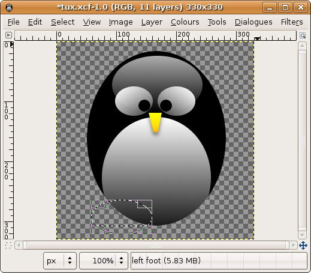

Tux
Free Tux Avatars and Icons - Click to see full size.

To always have the latest creation as your UbuntuForums avatar copy and paste the following into the avatar url box: http://www.helpbuntu.mstrutt.co.uk/pics/thumbs/latest.png
How to Make Your Own Tux Avatar
I suggest keeping each section on a new layer for ease of use inthe future. Draw and elipse using the 'elipse select tool'. Fill it in black using the 'colour fill tool'. Draw another elipse, covering the top third of the first one. Use the gradient tool to fill it from white to transparent. Use the 'fuzzy select tool' and then set the 'elipse tool' to the shown setting. Draw an elipse that covers about two thirds of the black elipse but intersects at the bottom. Again use the 'gradient tool' to fill the selection from white to transparent. Draw a small elipse for an eye. Fill the eye with a gradient of white and the draw and 'colour fill' a pupil black. Then select all (Ctrl + A). Copy (Ctrl + C) and Paste (Ctrl + V) the eye. Secure the paste as a layer with the buton shown. Then flip the layer horisontally to get a symetrical eye. This is how your image will now look. Set-up the gradient as shown and fill a small rectangular selection between the bottom of the eyes. Select the 'perspective tool'.

Select an elipse so that the square cuts the bottom off it. Fill it using the same gradient as the beak. Do the same copy, paste, flip to the foot that you did to the eye. Then add a drop shadow to each. Save the file as a .xcf and then save a copy as .png And there you have it, your very own Tux Avatar.